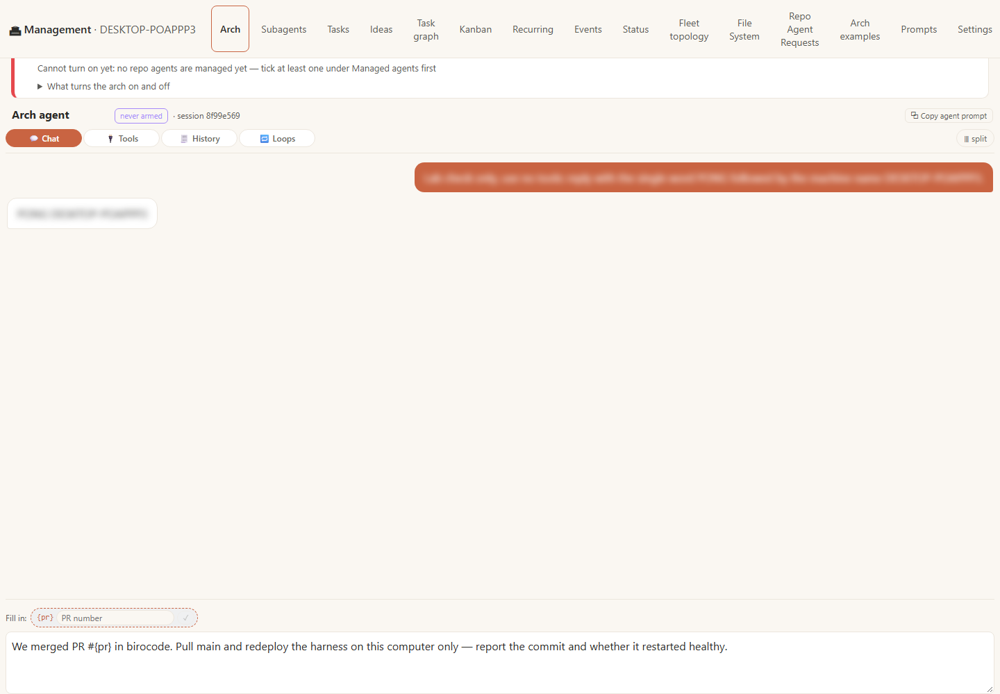
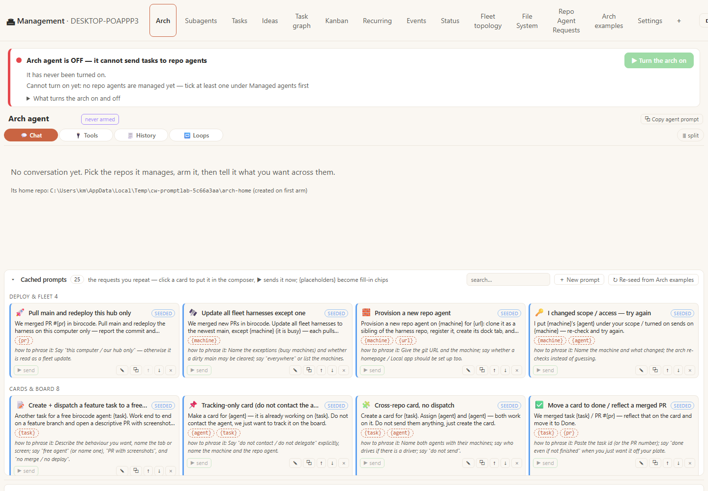
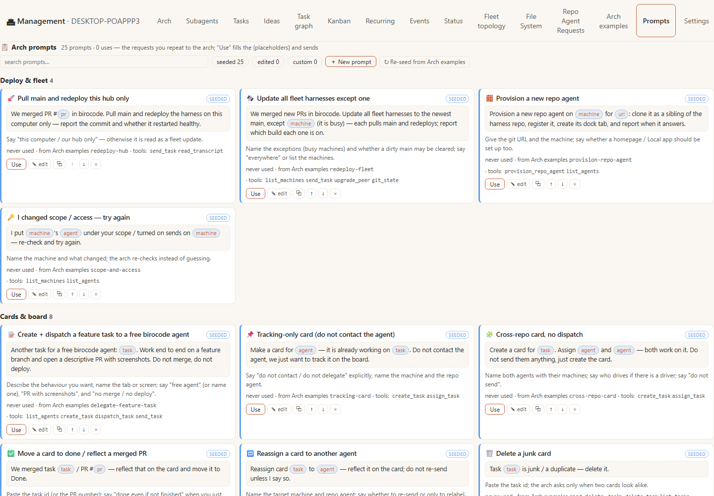
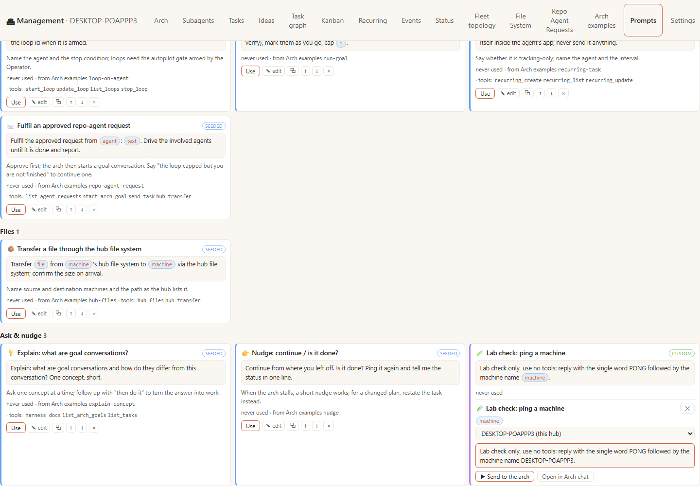
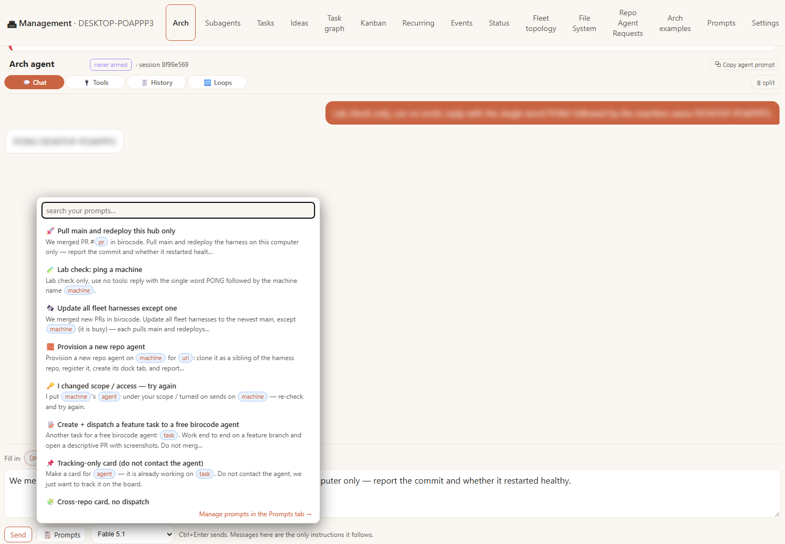

Drag the slider: the Arch chat before (left) and after (right)


| Where | Before | After |
|---|---|---|
| Arch chat | 25 prompt cards above the composer; the composer below the fold | the conversation and the composer; one 📋 Prompts button |
| Managing prompts | inside the chat | Management → Prompts tab |
| Filling placeholders | after inserting, in the composer | in the tab, from live pick lists, with a preview (the composer chips remain too) |
| Sending a prompt with placeholders | not possible from a card | ▶ Send to the arch once filled |
| Usage and tools | not shown | "used 3× · last 2 d ago" and the tools each prompt leads to |
Try the Use flow
1Prompts tab: Use on a card
2Fill the chips: machines and agents come from the live arch state; cards from the task graph
3aSend → the Operator-facing arch conversation; the use is counted
3bOpen in Arch chat → the Arch tab opens with the text in the composer (never sent by itself)
What moved, what stayed
| Piece | Status |
|---|---|
Store /api/prompts?owner=arch, the seeding rule, the arch's cache_prompt / list_cached_prompts / remove_cached_prompt | unchanged |
uses / lastUsedAt + POST /api/prompts/{id}/used | new (old files load as 0 / never) |
ArchPromptsPanel (the in-chat block) | removed |
PromptsTab · ArchPromptPicker · PromptForm (extracted) | new |
| Placeholder chips in the Arch composer | kept |
| Hand-off from the tab to the chat | a sessionStorage slot + the arch:handoff-draft event + the manage:open-tab event |
| Subagents (goal conversations) | same Arch component, so the same 📋 Prompts button; queueing for a held goal unchanged |
Live on this hub (isolated lab harness): 20/20 after, 3/3 before


